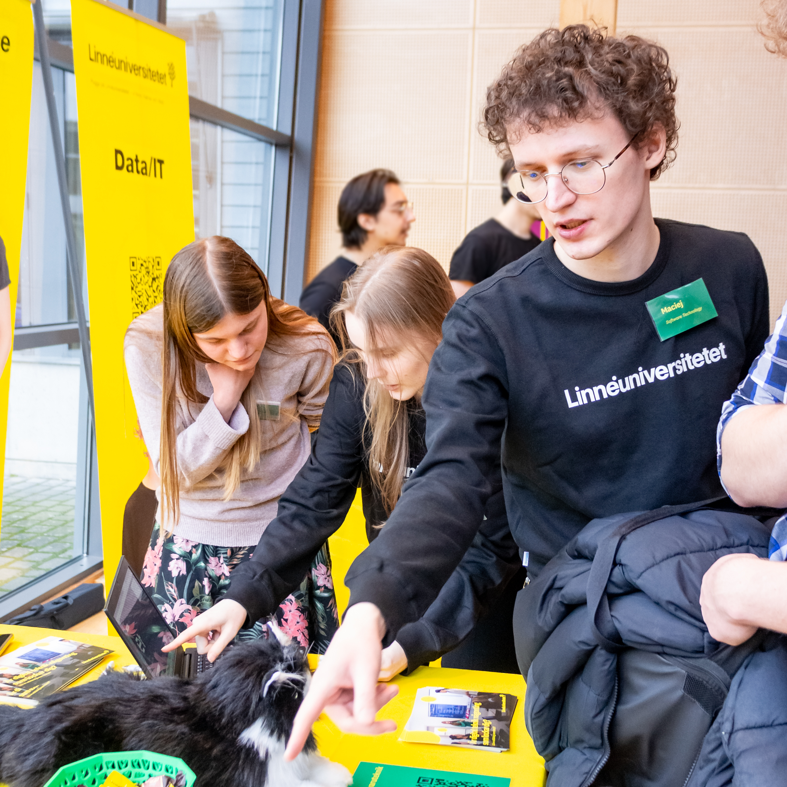
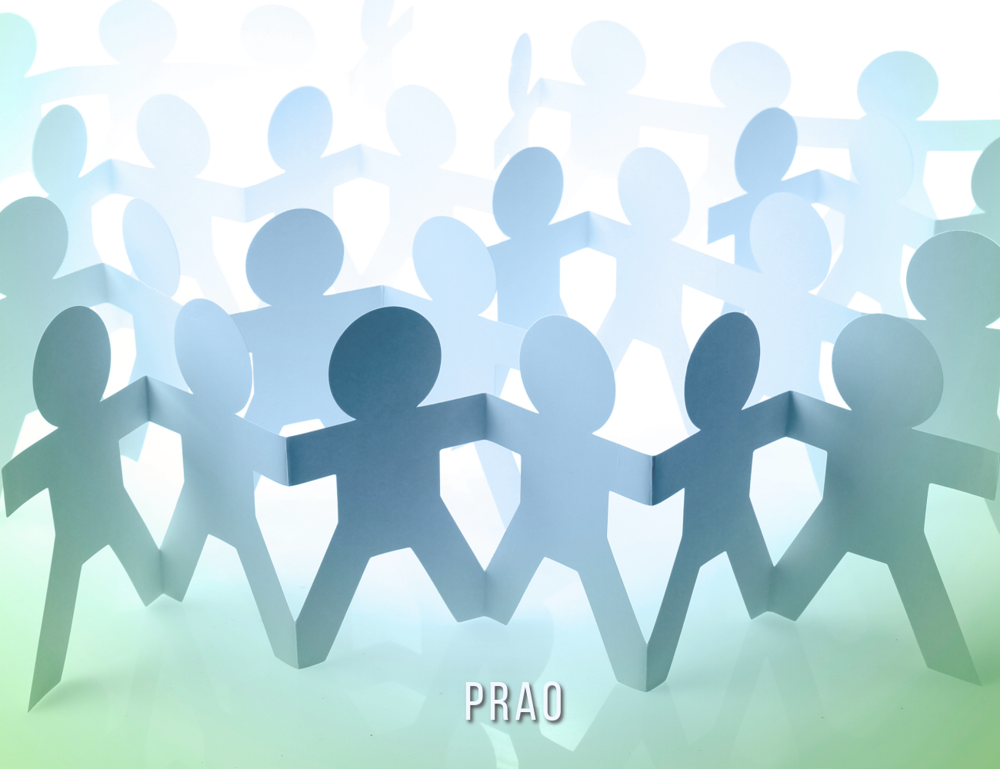

Welcome Fair Visit
Some of our TEP students recently took part in the university's Welcome Fair, an event for kids and teens interested in applying in the future. Visitors got to interact with a robotic cat, that moved and behaved like a real cat. Our team was there to explain the tech behind it and show what kind of exciting projects you can be part of when you study here.
2025/02/03

Upcoming Kid's Programming Course
In mid-June, some of our TEP students will be teaching a programming course for kids, using brand new material from Kodcentrum. The course runs from June 16–18, and there's also a plan to offer an additional afternoon session for kids and teens with prior programming experience. Preparations will include team meetings to get familiar with the content before the sessions begin.
2025/06/16 - 2025/06/18

PRAO Week: Teaching Scratch
Next week, some TEP students will be meeting two 14–15-year-old pupils visiting our university as part of their PRAO (job shadowing) experience. During their stay, we’ll be guiding them through a crash course in programming using Scratch, giving them a glimpse into student life and what it’s like to learn tech at the university.
2025/05/13 - 2025/05/16